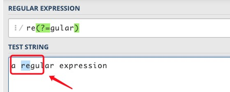
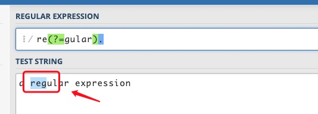
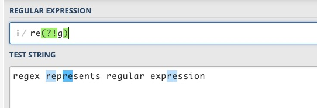
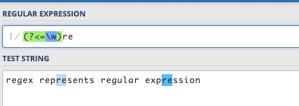
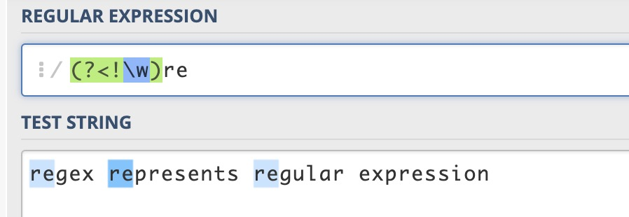
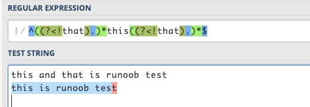
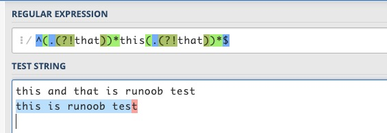

正则表达式中的零宽断言是一种特殊的结构，它在匹配的时候不会消耗字符，只是对匹配位置进行条件判断。这对于一些复杂的模式匹配非常有用，因为它允许你在匹配位置前面或后面添加条件，从而更精确地控制匹配。
正则表达式的先行断言和后行断言一共有 4 种形式：
- (?=pattern)零宽正向先行断言(zero-width positive lookahead assertion)
- (?!pattern)零宽负向先行断言(zero-width negative lookahead assertion)
- (?<=pattern)零宽正向后行断言(zero-width positive lookbehind assertion)
- (?<!pattern)零宽负向后行断言(zero-width negative lookbehind assertion)
这里面的pattern是一个正则表达式。
如同^代表开头，$代表结尾，\b代表单词边界一样，先行断言和后行断言也有类似的作用，它们只匹配某些位置，在匹配过程中，不占用字符，所以被称为"零宽"。所谓位置，是指字符串中(每行)第一个字符的左边、最后一个字符的右边以及相邻字符的中间（假设文字方向是头左尾右）。
概念说明：
- 零宽（Zero-width）： 只匹配位置，零宽意味着断言在匹配时不会"消耗"字符串，它只是对位置进行条件判断，不包括匹配位置之前或之后的字符在匹配结果中。
- 先行（Lookahead）： 表示断言发生在匹配位置之前。
- 后行（Lookbehind）： 表示断言发生在匹配位置之后。
- 正向（Positive）： 匹配括号中的表达式，即断言所作的条件判断是肯定的，即只有当条件成立时，匹配才成功。
- 负向（Negative）： 不匹配括号中的表达式，即断言所作的条件判断是否定的，即只有当条件不成立时，匹配才成功。
下面分别举例来说明这 4 种断言的含义。
(?=pattern) 正向先行断言
代表字符串中的一个位置，紧接该位置之后的字符序列能够匹配 pattern。
例如对"a regular expression"这个字符串，要想匹配 regular 中的 re，但不能匹配 expression 中的 re，可以用re(?=gular)，该表达式限定了 re 右边的位置，这个位置之后是 gular，但并不消耗 gular 这些字符。

将表达式改为re(?=gular).，将会匹配 reg，元字符.匹配了g，括号这一砣匹配了e 和 g之间的位置。
(?!pattern) 负向先行断言
代表字符串中的一个位置，紧接该位置之后的字符序列不能匹配 pattern。
例如对"regex represents regular expression"这个字符串，要想匹配除 regex 和 regular 之外的 re，可以用re(?!g)，该表达式限定了re右边的位置，这个位置后面不是字符g。
负向和正向的区别，就在于该位置之后的字符能否匹配括号中的表达式。

(?<=pattern) 正向后行断言
代表字符串中的一个位置，紧接该位置之前的字符序列能够匹配 pattern。
例如对regex represents regular expression这个字符串，有 4 个单词，要想匹配单词内部的 re，但不匹配单词开头的 re，可以用(?<=\w)re，单词内部的 re，在 re 前面应该是一个单词字符。
之所以叫后行断言，是因为正则表达式引擎在匹配字符串和表达式时，是从前向后逐个扫描字符串中的字符，并判断是否与表达式符合，当在表达式中遇到该断言时，正则表达式引擎需要往字符串前端检测已扫描过的字符，相对于扫描方向是向后的。

(?<!pattern) 负向后行断言
代表字符串中的一个位置，紧接该位置之前的字符序列不能匹配 pattern。
例如对"regex represents regular expression"这个字符串，要想匹配单词开头的 re，可以用(?<!\w)re。单词开头的re，在本例中，也就是指不在单词内部的re，即re前面不是单词字符。当然也可以用\bre来匹配。

对于这 4 个断言的理解，可以从两个方面入手：
-
1、关于先行(lookahead)和后行(lookbehind)：正则表达式引擎在执行字符串和表达式匹配时，会从头到尾（从前到后）连续扫描字符串中的字符，设想有一个扫描指针指向字符边界处并随匹配过程移动。先行断言，是当扫描指针位于某处时，引擎会尝试匹配指针还未扫过的字符，先于指针到达该字符，故称为先行。后行断言，引擎会尝试匹配指针已扫过的字符，后于指针到达该字符，故称为后行。
-
2、关于正向(positive)和负向(negative)：正向就表示匹配括号中的表达式，负向表示不匹配。
对这 4 个断言形式的记忆：
-
1、先行和后行：后行断言(?<=pattern)、(?<!pattern)中，有个小于号，同时也是箭头，对于自左至右的文本方向，这个箭头是指向后的，这也比较符合我们的习惯。把小于号去掉，就是先行断言。
-
2、正向和负向：不等于(!=)、逻辑非(!)都是用!号来表示，所以有!号的形式表示不匹配、负向；将!号换成=号，就表示匹配、正向。
我们经常用正则表达式来检测一个字符串中包含某个子串，要表示一个字符串中不包含某个字符或某些字符也很容易，用[^...]形式就可以了。要表示一个字符串中不包含某个子串（由字符序列构成）呢？
用 [^...]这种形式就不行了，这时就要用到（负向）先行断言或后行断言、或同时使用。
例如判断一句话中包含this，但不包含that。
包含this比较好办，一句话中不包含that，可以认为这句话中每个字符的前面都不是that或每个字符的后面都不是that。正则表达式如下：
^((?<!that).)*this((?<!that).)*$ 或 ^(.(?!that))*this(.(?!that))*$
对于this is runoob test这句话，两个表达式都能够匹配成功，而this and that is runoob test都匹配失败。


在一般情况下，这两个表达式基本上都能够满足要求了。考虑极端情况，如一句话以that开头、以that结尾、that 和 this连在一起时，上述表达式就可能不胜任了。 如runoob thatthis is the case或者this is the case, not that等。
只要灵活运用这几个断言，就很容易解决：
^(.(?<!that))*this(.(?<!that))*$ ^(.(?<!that))*this((?!that).)*$ ^((?!that).)*this(.(?<!that))*$ ^((?!that).)*this((?!that).)*$
这 4 个正则表达式测试上述的几句话，结果都能够满足要求。
上述 4 种断言，括号里的 pattern 本身是一个正则表达式。但对 2 种后行断言有所限制，在 Perl 和 Python 中，这个表达式必须是定长(fixed length)的，即不能使用*、+、?等元字符，如(?<=abc)没有问题，但(?<=a*bc)是不被支持的，特别是当表达式中含有|连接的分支时，各个分支的长度必须相同。之所以不支持变长表达式，是因为当引擎检查后行断言时，无法确定要回溯多少步。Java 支持?、{m}、{n,m}等符号，但同样不支持*、+字符。Javascript 干脆不支持后行断言，不过一般来说，这不是太大的问题。
先行断言和后行断言某种程度上就好比使用if语句对匹配的字符前后做判断验证。
以下列出 ?=、?<=、?!、?<!= 的使用
exp1(?=exp2)：查找 exp2 前面的 exp1。

(?<=exp2)exp1：查找 exp2 后面的 exp1。

exp1(?!exp2)：查找后面不是 exp2 的 exp1。

(?<!=exp2)exp1：查找前面不是 exp2 的 exp1。

参考链接：https://blog.51cto.com/cnn237111/749047
点我分享笔记
<p style="font-size:14px;">笔记需要是本篇文章的内容扩展！</p><br> <p style="font-size:12px;"><a href="../tougao.html" target="_blank">文章投稿，可点击这里</a></p> <p style="font-size:14px;"><a href="./runoob-user-test-intro.html" target="_blank">注册邀请码获取方式</a></p> <h3 class="text-muted"><i class="fa fa-info-circle" aria-hidden="true"></i> 分享笔记前必须<a href=".." class="runoob-pop">登录</a>！</h3> <p><a href="./runoob-user-test-intro.html" target="_blank">注册邀请码获取方式</a></p>